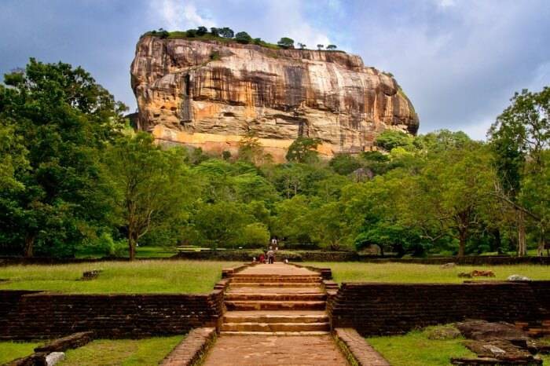
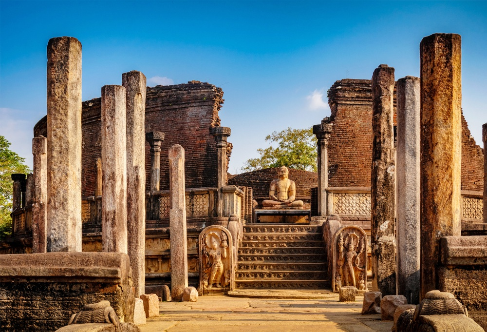

|
 Sigiriya Earlier is was a rock-shelter mountain monastery which was donated by Buddhist devotees. Later King Kassapa renovated it by building gardens and palace. After his death it was again used as a monastery. Human habilitation in Sigiriya at its earliest was found to be nearly five thousand years during the Mesothilic period. Rock inscriptions are carved near the drip ledges on many of the shelters, recording the donation of the shelters to the Buddhist monastic order as residences. These have been made within the period between the third century B.C and the first century A.D. In 1831 Major Jonathan Forbes of the 78th Highlanders of the British army while returning on horseback from a trip to Polonnaruwa came across the "bush covered summit of Sigiriya". Sigiriya came to the attention of antiquarians and later archaeologists. The Sigiriya complex itself consists of the central rock and two rectangular precincts which are surrounded by two moats and three ramparts. The city is based on a square module. |
 Polonnaruwa Polonnaruwa is the Island's 2nd largest kingdom. Today the ancient city of Polonnaruwa remains one of the best planned Archeological relic sites in the country, standing testimony to the discipline and greatness of the Kingdom's first rulers. Its beauty and serenity was captured in the Duran Duran music video Save a Prayer in 1982. The ancient city of Polonnaruwa has been declared a World Heritage site by UNESCO. The Lankathilaka temple and a colossal statue of the Buddha made from stone is located here.Polonnaruwa is the 2nd largest city in north central province. But it is known as one of the cleaner and more beautiful cities in the country. The greeny environment houses amazing ancient constructions, Parakrama Samudraya (a huge lake built in 1200 A.C) and above all nice hospitable people. |
 Kataragamam Kataragamam temple in Kataragama, Sri Lanka, is a temple complex dedicated to Buddhist guardian deity Kataragama deviyo and Hindu War God Murugan. It is one of the few religious sites in Sri Lanka that is venerated by the Buddhists, Hindus, Muslims and the Vedda people. For most of the past millennia, it was a jungle shrine very difficult to access; today it is accessible by an all-weather road. The shrines and the nearby Kiri Vehera are managed by Buddhists, the shrines dedicated to Teyvāṉai and Shiva are managed by Hindus and the mosque by Muslims. Up until the 1940s a majority of the pilgrims were Tamil Hindus from Sri Lanka and South India who undertook an arduous padayatra or “pilgrimage on foot”. Since then most pilgrims tend to be Sinhala Buddhists and the cult of Kataragama deviyo has become the most popular amongst the Sinhalese people. |